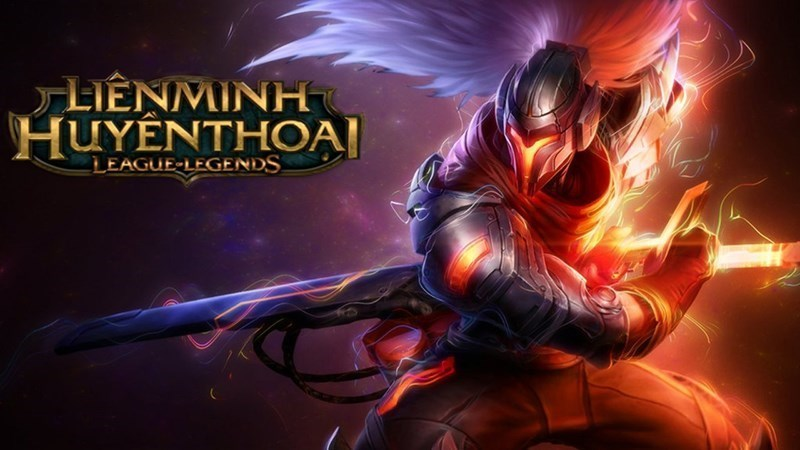

League of Legends - Game MOBA phổ biến nhất thế giới
10 năm - đây có thể là khoảng thời gian mà một game đi đến thời hoàng kim của nó rồi tàn lụi chìm vào dĩ vãng. Nhưng với Liên Minh Huyền Thoại thì ngược lại, hơn 10 năm qua LMHT ngày càng hoàn thiện và khẳng định vị thế, sức ảnh hưởng to lớn của mình trong thể thao điện tử nói chung và MOBA nói riêng.

1, Thông tin League of Legends
Hiện nay Liên Minh Huyền Thoại là một ông lớn trong làng game Moba không chỉ ở Việt Nam mà còn trên khắp các quấc gia trên thế giới. Tựa game này được RIOT GAMES phát hành năm 2009 và phát triển cho đến tận nay và đang là tựa game dẫn đầu của dòng game Moba.
2, Gameplay
2.1, Lối chơi
Trong Liên Minh Huyền Thoại (League of Legend) người chơi sẽ điều khiển những vị tướng (Champions) để đối đầu với những người chơi team khác theo luật chơi MOBA.
Người chơi sẽ thu nhặt tài nguyên (vàng) bằng cách kết liễu những đơn vị lính, quái rừng và người chơi khác để có thể lên cấp. Sau khi “tiết kiệm” đủ vàng, người chơi có thể gia tăng sức mạnh của vị tướng mình đang sở hữu bằng cách mua những trang bị thiết yếu tại “Bệ Đá Cổ” – Nơi bắt đầu mỗi trận đấu. Nhiệm vụ của mỗi đội là phá huỷ nhà chính của đối phương trước.

2.2, Chế độ chơi
Các bản đồ khác nhau sẽ có cách chơi khác nhau:
Summonner rift: Bản đồ truyền thống, đây sẽ là nơi diễn ra các trận đấu Normal, Ranked theo lối chơi phá nhà chính truyền thống.

ARAM: Vực gió hú, đây là bản đồ chỉ có duy nhất một đường (Trên cây cầu bắc ngang vực gió hú), ở chế độ này người chơi sẽ được Random tướng (chọn ngẫu nhiên) và giao tranh tại 1 đường duy nhất, trận đấu sẽ kết thúc khi phá được nhà chính đối phương.
URF: Ultra Rapid Fire, đây là chế độ cực kỳ thú vị, người chơi sẽ được thoải mái “spam skill” mà không phải tốn năng lượng, những chiêu thức sẽ được giảm 80% thời gian hồi chiêu. Tại Việt Nam nói riêng và thế giới nói chung, đây là chế độ được ưa thích nhất, mỗi khi chế độ này được mở ra thường có tình trạng nghẽn máy chủ (vì có quá nhiều người chơi cùng một lúc).
One For All: đúng theo tên gọi, cả 5 người chơi cùng 1 team sẽ chơi cùng một vị tướng, những pha ủi “tối mặt tối mài”, những pha “Hasagi” khiến đối phương lơ lửng trên không trung cho tới khi đi vào lòng đất cũng từ đây.
Chế độ Hexakill: Khu Rừng Quỷ Dị - 6 người chơi mỗi đội đối đầu với nhau tại bản đồ Khu Rừng Quỷ Dị với Trụ ngoài bị loại bỏ.
Đấu Trường Chân Lý (TFT): Đây là một chế độ hoàn toàn mới của Liên Minh Huyền Thoại. Được lấy cảm hứng từ Auto Chess, Đấu Trường Chân Lý thuộc thể loại Auto Battler. Trận đấu sẽ bắt đầu với 8 người chơi, mỗi người sẽ dùng các vị tướng LMHT như là các quân cờ. Kết hợp và sáng tạo đội hình cùng với các trang bị để trở nên mạnh mẽ nhất.
Chế độ Thảm họa Diệt Vong (Hay Máy Siêu Khủng Khiếp). Người chơi chiến đấu với những tướng được Máy điều khiển có bộ chiêu thức vô cùng bá đạo và trùm cuối là Quỷ Vương Teemo. Chế độ có hai độ khó: Thường và Thử thách.
2.3, Hệ thống tướng đa dạng
Tính đến nay đã có hơn 147 vị tướng được thiết kế lối chơi và cốt truyện riêng khác nhau. Điểm cuốn hút của Liên Minh Huyền Thoại một phần cũng vì sự đa dạng các vị tướng, người chơi có thể chơi những vị tướng mang đậm phong cách cá nhân của bản thân.
Bản đồ Summoner Rift Liên Minh Huyền Thoại được xây dựng theo chuẩn MOBA với 3 đường chính và 1 đường rừng. Các tướng trong Liên Minh tuỳ vào vai trò của mình sẽ chọn được đường tốt nhất phát huy hết sức mạnh, tiềm năng của mình.
2.3.1, Top Lane
Nơi những đấu sĩ sẽ đối đầu 1v1 với nhau những vị tướng thường được chọn ở vị trí này sẽ là những Đấu Sĩ, Tanker cứng cá biệt hơn là những đơn vị có khả năng đè đường có thể gây khó chịu cho đối phương cực mạnh như Teemo, Vayne,… Top Lane đóng vai trò rất lơn sau thời điểm giữa game vì sẽ là vị trí tiên phong chống chịu cho toàn đội khi giao tranh.
2.3.2, Mid Lane
Nơi những pháp sư - những vị trí đóng vai trò cấu rỉa trong giao tranh, những vị tướng có khả năng di chuyển để hỗ trợ đồng đội nhanh chóng (vì Mid Lane nằm ở giữa bản đồ) đây là vị trí có thể tạo đột biến trong trò chơi vì có rất nhiều vị tướng pháp sư có khả năng gánh team cực mạnh như: Veiga, Yasuo,… So với Top Lane thì đây có thể nói là vị trí nổ ra nhiều pha giao tranh nhất, những màn trao đổi chiêu thức, cấu máu cũng như gây đột biến cho trận đầu đối với Mid Lane đóng vai trò không nhỏ.
2.3.3, Jungle
Vị trí đi rừng, trong bản đồ Summerift rừng đóng vai trò quyết định trong ván đấu, những vị trí đi đường (Mid, Top, Bot) sẽ nhận được hỗ trợ từ người đi rừng hay còn gọi là “Gank”. Nhiệm vụ của người đi rừng là kiểm soát bản đồ, tiến hành ăn những mục tiêu lớn như Rồng, Barron Narstor, Sứ Giả Khe nức,… vị trí rừng cực kỳ quan trọng trong quá trình đi đường vì người đi rừng có thể cho tầm nhìn của đối phương khi họ di chuyển và báo về team thông qua việc cắm mắt; những buff có lợi như Rồng, Barron sẽ mang lại tác động cực lớn đến những Lane khác, đặc biệt người đi rừng còn có một vai trò quan trọng khác là hỗ trợ những vị trí đi đường giao tranh để đạt thắng lợi và đẩy Snow Ball. Nói không ngoa khi nhiều game thủ cho rằng “Thắng bại tại người đi rừng”
2.3.4, Bot Lane
là Lane “đôi”, khác với Mid và Top Lane, Bot Lane có sự xuất hiện của hai vị trí khác là AD và Support. AD (Xạ thủ) đóng vai trò quan trọng nhất trong team vì là nguồn sát thương chính khi giao tranh tổng (Combat) qua những phát đánh tay. Support (hay hỗ trợ) đóng vai trò bảo vệ AD và kiểm soát tầm nhìn bản đồ cho team. Vì đây là Lane có 2 vị tướng đi cùng nên những trận giao tranh lớn nhỏ thường xuất hiện tại đây và Bot Lane đóng vai trò quyết định cho trận đấu.
3, Tổng kết
Những yếu tố trên đã khiến Liên Minh Huyền Thoại có một sức hút khó có thể cưỡng lại cho các game thủ. Nhờ vậy, Giải vô địch thế giới Liên Minh Huyền Thoại là một sự kiện quan trọng trong năm của các game thủ, thu hút người xem đến từ toàn cầu.